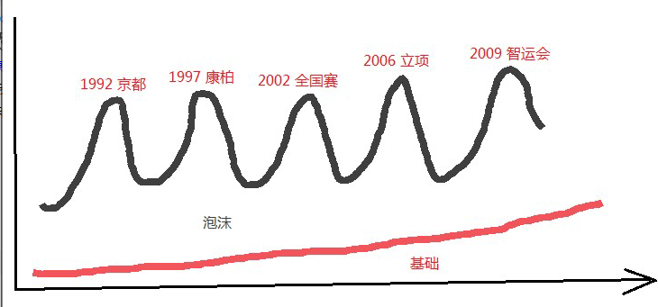

繁华归沉静 回望来时路
#1 繁华归沉静 回望来时路作者：闭才 发表时间：2013-11-19 13:24:03
一，连珠石器时代在人类的石器时代，只要会点火、摆弄含铜的石头就是合格的“高富帅”，不是因为它本身有多了不起，而是因为它领先了时代一点点。

（随机选取无禁一对局一盘）
大概在90年，大家还在活三冲四、横冲直撞的“石器时代”，只要懂留二不活，留三不冲就足以横扫全班，威震全校；若能再懂个VCT、VCF，那就仅离专业棋手一步之遥。我个朋友在“漳州XX学院”的小部落里五子棋号称独孤求败，其独门五学就八个字：持黑花浦，持白八卦。
OK，想穿越到小部落开宗立派的读者们可电联，我能提供定向传送门并收取小额门票。我敢保证你若在小部落里蹦出个VC2的概念，准会被集体无视；因为超越时代一步的是天才，超越时代两步的是疯子！
诸如：留二不活、留三不冲，开局争活二，八卦阵，以守待攻这类的观点都是这个时代的产物。这些在现代看起来很有漏洞的技巧，在当时就像“地球是宇宙的中心”一样深入人心。
二、黑暗控制时代

黑棋控盘
安度是RIF的神话之一，他就像新时代棋手杀入石器时代，用绵绵不绝的的冠军动摇着旧时代的根基，颠覆着人们的世界观。当绝大多五子棋老师声称“控制才是王道”时，这昭示着黑暗控制时代的到来。
这是个白棋无比悲惨的时代！所有人都相信黑棋可以全盘控制，保和争胜，而白棋除了被动挨打外还是被动挨打！这也是个不需要争议的年代，既然控制成为五子棋的最高标准，那其他想法不都是肤浅、多疑和无知的吗？即便偶尔真出现质疑的声音，一句“安度与我同在”足以逢凶化吉！
今天，更强的技术早已证明控制的作用被过分放大了，但不少老师依然坚持控制是最中庸选择的观点，可见其生命力的顽强。
三、暴力终结时代
暴力终结时代，简单点说就是现在。它大概从2003年开始，随后是越来越强的软件，高超的用软技术，从“强者徽章”到“泛滥成灾”的地毯谱，控制流到暴力化的网络PK与现实大赛。

以此变化为例，对比不同时代思潮的差异。

旧石器时代，乱来的时代。
下棋感言：五子棋就是拼眼力，看谁能在纷乱的棋盘中看清活三冲四。

新石器时代，做二挡二，没了。
下棋感言：只懂活三冲四的弱爆了，应该一个二都不活，一个三都不冲，全保留着，积累到能胜再进攻。

控制时代，争夺双方好点。
下棋感言：只懂做二挡二弱爆了，应该是积累外围优势同时限制对方好点，积累到足够优势再进攻，即便进攻失败也能保和。
真实情况：控制虽然在理论上没什么漏洞，但是实际运用常演变成单纯的互抢好点。

终结时代，极限杀伐。
下棋感言：1、谁说要留二不活留三不冲的？我就活三冲四再做棋！
2、谁说要控制局面，积累外围的？我就内部强攻一波推平！就算推不死，我一样能攻得白棋没有外围，没有机会。
3、讨论是否活三冲四这种形式问题没有意义，抓住“好点”这个本质足矣！讨论防守、进攻、控制这类策略问题也没有意义，关键是如何得到最优局面。
4、暴力不是乱攻，是未来局面的深度把握，是对先手与形状极限的平衡！
四、井底之蛙的不甘
技术决定了眼界，而眼界决定了世界观。就以人类历史为例，石器时代肉眼看世界的天圆地方，中世纪的天文望远镜颠覆地心说，现代太空望远镜到宇宙孤独的流浪者。

黑暗控制时代最高成就代表之一是松月一打的终结，棋谱总手数近十万。

暴力终结时代的最高成就代表之一是松月三打的近地毯，棋谱总手数近千万。（听很多人说地毯了）
石器时代没有好的代表作，但基于人粗浅的计算，数量级定为是百十千都没有问题。
不同时代对棋研究的数量级差距非常明显——从千级，到十万级，到千万级。在数量级不过千的石器时代，我们就只能驾驭留二不活留三不冲这类很粗浅的技巧；而当数量级加深到十万时，我们就可以在更远范围影响局面发展得轨迹；而当数量级激增到千万时，我们就可以忘掉过去两个时代的所有技巧，在茫茫迷雾中寻找五、六十步的唯一必胜！
就像有显微镜之后才能观察微生物一样，千万数量级的研究帮助我们观察到更精妙细微的技巧，比如“补杀手割”“先手与进攻形状的平衡”的归纳总结。再把视角转到实战，控制时代与暴力时代选手的计算力并没有明显差距，但越来越多棋手选择强硬的进攻而非稳健的控制可见一斑。
但是，我们是否已经知足，变得目光短浅了？
五、读史使人明志
我们学习古代史，不是为了哪天穿越时空当一代权臣；分析股票曲线，不是为了追悔命运的捉弄。了解五子棋的过去，是为了更好的展望未来！
你知道千万数量级的松三地毯谱是怎么炼成的吗？最强的黑石配合终结者，良好的电脑配置，N名五子棋顶级棋手组成的集团军，前后不下3年的研究积累。假如电脑配置、软件没有革命性的提升，要将数量级提升上亿，可能吗？我的答案是否定的，总不能一个变化研究十几年吧？那么五子棋的技术已经达到顶峰，无法再前进一小步了吗？我的答案依然是否定的……

最好不要问我根据什么预测的，因为它们一半是人类各种历史的模仿抄袭，另一半是我的主观猜测。不过，客观依据还是有一点的，详见六、七、八点。
#2 Re:繁华归沉静 回望来时路作者：茗弈妙手 发表时间：2013-11-19 13:24:50
我怎么觉得应该发在交流版块。。。#3 Re:繁华归沉静 回望来时路作者：闭才 发表时间：2013-11-19 13:25:37
六、打开“棋感”黑匣子松三地毯是五子棋技术进步的里程碑，它包含大量精妙入微的攻杀技巧。这些技巧不应只能用于松三，所以我一直希望能将这些技巧总结得像“八卦阵”那样通俗易懂。遗憾的是直到方寸完本，我依然只知道松三地毯了，却不知道为什么；假如再出现个松三，恐怕我们还得研究三年，不会有根本性的改变。我也借鉴网络文章，但不少属于马后炮理论；就像大地震后的各种理论、分析、解释，听起来很合理，但在下一次地震来临时依然什么都做不了。
自书完本后，我都忘了自己多久没下棋了，似乎有些回忆不起轻敲棋子的感觉了。或许放下之后，心境发生了很大的变化，回头看看走过的路，似乎清晰了许多。或许，我很幸运的得到次从局外看局内的机会！
蛋糕大作战
背景：我给两个朋友（同天生日）买生日蛋糕。
我：老板，我要订做个生日蛋糕，帮我做一只老鼠加一只老虎。
老板：对不起，蛋糕太小，没地方做两只，只能做一只。
我：那好，给我做个土豪金，一定要金黄！
老板：……这个完全做不了！
我：那算了，给我做个尊贵、大气、上档次的！
老板：……这个……我不会做！
我：这也不行？那给我做个高富帅加白富美！
老板：……我还是做老鼠加老虎吧……
因为这事我朋友夸我深蕴欲擒故纵之法，但实际情况是我根本没想什么欲擒故纵，我甚至什么都没有想。创意、灵感、思潮，就是这么自然而然产生，我能意识到创意的开始，也能意识到创意的结果，但我完全意识不到创意的过程。

选择这个17，是不是因为它空间开阔？做了个跳活二？与5、13的活二呼应？或者其他什么理论？
都不是，其实我也不知道为什么17走这，就纯粹种感觉，然后随便尝试了一下。结果猛的发现白棋居然只剩18在o点的唯一防。
然后我再把17换到o点位置，结果发现黑必胜了！o点唯一防与17走o点之间存在必然的逻辑关系吗？没有，纯粹凭感觉去试试而已。
是的，没有原因，就是种感觉。但请不要失望，虽然我没法告诉你什么是感觉，但我或许能提供“寻找感觉”的线索。

为什么会想到上图的17呢？这归功于左图的17。
这是个失败的17，怎么攻都杀不出来，但这也渐渐形成一个感觉——上边进攻材料不够，换右边进攻！
当然这感觉不会浮现在你的意识里，它只能进入你的潜意识。感觉就像默默关心你的红颜知己，平时意识不到它的存在，但在你心力憔悴、意识疲乏时，她会悄悄递来张小纸条… 然后，你冥冥中就有想试试A点的冲动，你依然不明白为什么17要走A，你只是有种想走A的感觉。
感觉就像默默关心的红颜知己，是一种沉默的温柔，她总是来去无声，令人难以捉摸。然而，现在是我们主动去牵手的时候啦！

左图白28抢攻是白稍优，无论黑棋怎么研究都是吃亏的。
现在停下软件好好感受，为什么27黑还在进攻，到28反而变成白先手了呢？局势突然变化的原因是什么？是不是因为先手？要不黑保持先手试试？

每个人都应该学会自己给自己提问题，问题能引导我们思考，引导我们去找到那种感觉！Just try，就这么简单。
27 就简单做了V，反正白棋多个28也不够杀，黑棋没实际损失，但所得却是30无法脱先，31在左边抢占先机，局势逆转！
自问自答有个响亮的名字，叫苏格拉底思维催产术，从嘴里蹦出来不了解的还以为碰到大哲，其实内容简单得要命！
但是，千万别以为掌握了这招就等于掌握了未来，找感觉的前提是有感觉。假如你胸无点墨，头脑空空，那就算有GPS导航系统也无计可施！感觉的酝酿需要大量的实践，数万盘的对局、聚会棋局的讨论、复盘的研究、定式的拆解都是必要的，千万别小看基本功的积累。

30~40步的必胜，100万手数的分支，浩大的工程不允许有任何的纰漏。前进的道路千万条，而你甚至不知道是否真有必胜，这完全是在黑暗中摸索，一旦丧失信心，就再没有机会。
怎么完成如此壮举？
这种级别的难题绝不是胡乱尝试就能解决的。它需要先经过网络高手N的对战酝酿感觉，前进一小步迷茫了，再对战再酝酿感觉……
日复一日，水滴石穿。
小结：
1、假如婴儿学会走路需要摔500次，那么能主动寻找走路感觉的婴儿只需摔200次，想1次都不摔就学会走路的……人类目前做不到，或许小猪可以。
2、自问自答是种主动寻找感觉的方式，对战是种主动酝酿感觉的方式，而绝大多数棋手面临的问题是采用被动、消极、低效的方式等待感觉的垂青。
3、找感觉的前提是有感觉，有感觉的前提是雄厚的基本功。
4、如果可以，请自觉远离马后炮式的理论。
七、整体的感觉
我们走路并不需要想如何去迈步，只要跟着感觉走即可；杂技演员走钢丝也不需要想，就是种感觉。但这两种感觉的水平层次完全不是一个级别的——后者需要手感、平衡感等参与。
同样的，两三步的棋感与十几步的棋感水平层次也不是一个级别的。

两三步的棋感就是类似ABCD那类对棋形的感觉。
这种棋感我们非常熟悉，根本不需要“主动寻找”，它们不属于第六点讨论的内容。

需要我们“主动寻找”的是十几步的棋感，它是种对局面整体把握的感觉。
假如能发现局势变成左图这样，黑棋33开始的选择也就变得理所当然。这时就不是纠结于两三步棋的得失，而是对棋局深远发展的整体感觉把握。

左图23的本意是把右边交换掉，然后抢先手到左边进攻；但26的出现彻底打乱了黑棋的计划，27不得不防守，白棋28反而抢先到了左边，黑棋局势岌岌可危。
假如23不交换直接跑左边，白棋右边又有些威胁，黑棋该怎么办？
既然黑只是要先手，不计右边形状得失，那么23直接在25即可，顺利换得先手全身而退。

左图黑近胜，但如何做到呢？如何整体把握这局面呢？
如果你对这局面很陌生，首先建议你跟朋友PK几盘这局面找找感觉，再试着说说当前局面黑有什么，白有什么？
答案：黑右下L5必胜但需要做棋，白在上边有杀；想通这点，很容易意识到如果黑能把白上边交换掉并抢到先手即可必胜。
总体方针确定，执行的体力活就交给软件了，31=J13。

下了这么多年疏星，不知道大家对它有什么看法、感觉？
我就感觉疏星黑棋中盘始终攻不死，后盘白棋始终能反击，而且我总感觉黑棋先手保持得特别累，代价特别大。
或许，我们对待疏星的策略应该做些细微的调整——不再固执地保持先手、承认白棋进攻的机会。（当然要用软件证明白没杀，11F9就是个反例）
左图即是新策略的体现，我不知道结论会怎样，目前看双方的机会都多了。

秉持这种疏星微调策略，可以找到一些特别诡异的点。由于我没有太深入，所以也不知道它是否成立，不知道它是否能带来一点新意，权当抛砖引玉。
以上，即是第五点的未来预测的一点客观依据。
八、近朱者赤、近墨者黑
太久远的事情记得不清楚了，但我确信有一段时间我确实恪守留二不活的宗旨，当时感觉到的棋也都是连接多的点；后来大概因为跟酷妞接触比较多的缘故，我的棋变得非常有控制力；而现在对先手与进攻形状的把握，我敢肯定这跟我拆解总结了大量的必胜谱有关系。
相信大家对潜意识多少有些了解，它是个非常开放的系统，接触到的任何事物都能进入潜意识，虽然我们感觉不到。近朱者赤、近墨者黑。
良好的棋感需要正确的积累，所以我强烈建议有进取心的棋友坚持亲自拆解一切有疑问的棋，积极参与论坛讨论，主动与高手保持交流，最好将所有必胜开局的一打拆一遍（不用背、也不要嫌弃用不上）。可惜，我的要求明显太过分了。
退而求其次，只要你确定你所学的不是误导，那么无论自己下、旁观、软件拆解或者其他方式都是可行的；要提醒的是，假如学错东西再想从你潜意识里删除掉就难了。
学习有风险，入学需谨慎。
PS：“留二不活”是个比较悲催的观点。从石器时代100%的准确率，到控制时代一般成立的准确率，再到现在趋近于50%的准确率~~ 也算是时代进步的见证吧。
九、未来属于你们
我很高兴能有这么多的读者喜欢、支持我的作品，这也是我写作的动力！同时我很感激大家对我的挽留，可惜我人生这段棋途真的只能走到这里了；我只希望我的作品能陪伴你们永远走下去，那将是我的荣幸！
五子棋的未来，只属于你们！
#4 Re:繁华归沉静 回望来时路作者：伤情路 发表时间：2013-11-19 13:56:35
@百度用户
#5 Re:繁华归沉静 回望来时路作者：釣鱼岛岛主 发表时间：2013-11-19 15:40:32
图片 呵呵 全挂了#6 Re:繁华归沉静 回望来时路作者：厦门小天 发表时间：2013-11-19 16:12:53
 ………… 昨天发了一晚图片搞不定，都被抢先发了！ 好歹格式排版下啊！
………… 昨天发了一晚图片搞不定，都被抢先发了！ 好歹格式排版下啊！［ 冰雪笑醉同学于 2013-11-19 20:02:11 时花20金币送鲜花一朵］
［ 冰雪笑醉同学于 2013-11-19 20:02:11 时花20金币送鲜花一朵］
［ 冰雪笑醉同学于 2013-11-19 20:02:11 时花20金币送鲜花一朵］
［ 冰雪笑醉同学于 2013-11-19 20:02:11 时花20金币送鲜花一朵］
［ 冰雪笑醉同学于 2013-11-19 20:02:11 时花20金币送鲜花一朵］
［ 冰雪笑醉同学于 2013-11-19 20:02:11 时花20金币送鲜花一朵］
［ 冰雪笑醉同学于 2013-11-19 20:02:11 时花20金币送鲜花一朵］
［ 冰雪笑醉同学于 2013-11-19 20:02:11 时花20金币送鲜花一朵］
［ 冰雪笑醉同学于 2013-11-19 20:02:11 时花20金币送鲜花一朵］
［ 冰雪笑醉同学于 2013-11-19 20:02:11 时花20金币送鲜花一朵］
［ 冰雪笑醉同学于 2013-11-19 20:02:11 时花20金币送鲜花一朵］
［ 冰雪笑醉同学于 2013-11-19 20:02:11 时花20金币送鲜花一朵］
［ 冰雪笑醉同学于 2013-11-19 20:02:11 时花20金币送鲜花一朵］
［ 冰雪笑醉同学于 2013-11-19 20:02:11 时花20金币送鲜花一朵］
［ 冰雪笑醉同学于 2013-11-19 20:02:11 时花20金币送鲜花一朵］
［ 冰雪笑醉同学于 2013-11-19 20:02:11 时花20金币送鲜花一朵］
［ 冰雪笑醉同学于 2013-11-19 20:02:11 时花20金币送鲜花一朵］
［ 冰雪笑醉同学于 2013-11-19 20:02:11 时花20金币送鲜花一朵］
［ 冰雪笑醉同学于 2013-11-19 20:02:11 时花20金币送鲜花一朵］
［ 冰雪笑醉同学于 2013-11-19 20:02:11 时花20金币送鲜花一朵］
#7 Re:繁华归沉静 回望来时路作者：秋叶散人 发表时间：2013-11-19 16:29:55
是小天的新作吧，跪求有图全文！［ 冰雪笑醉同学于 2013-11-19 19:32:43 时花20金币送鲜花一朵］
［ 冰雪笑醉同学于 2013-11-19 19:32:43 时花20金币送鲜花一朵］
［ 冰雪笑醉同学于 2013-11-19 19:32:43 时花20金币送鲜花一朵］
［ 冰雪笑醉同学于 2013-11-19 19:32:43 时花20金币送鲜花一朵］
［ 冰雪笑醉同学于 2013-11-19 19:32:43 时花20金币送鲜花一朵］
［ 冰雪笑醉同学于 2013-11-19 19:32:43 时花20金币送鲜花一朵］
［ 冰雪笑醉同学于 2013-11-19 19:32:43 时花20金币送鲜花一朵］
［ 冰雪笑醉同学于 2013-11-19 19:32:43 时花20金币送鲜花一朵］
［ 冰雪笑醉同学于 2013-11-19 19:32:43 时花20金币送鲜花一朵］
［ 冰雪笑醉同学于 2013-11-19 19:32:43 时花20金币送鲜花一朵］
［ 冰雪笑醉同学于 2013-11-19 19:32:43 时花20金币送鲜花一朵］
［ 冰雪笑醉同学于 2013-11-19 19:32:43 时花20金币送鲜花一朵］
［ 冰雪笑醉同学于 2013-11-19 19:32:43 时花20金币送鲜花一朵］
［ 冰雪笑醉同学于 2013-11-19 19:32:43 时花20金币送鲜花一朵］
［ 冰雪笑醉同学于 2013-11-19 19:32:43 时花20金币送鲜花一朵］
［ 冰雪笑醉同学于 2013-11-19 19:32:43 时花20金币送鲜花一朵］
［ 冰雪笑醉同学于 2013-11-19 19:32:43 时花20金币送鲜花一朵］
［ 冰雪笑醉同学于 2013-11-19 19:32:43 时花20金币送鲜花一朵］
［ 冰雪笑醉同学于 2013-11-19 19:32:43 时花20金币送鲜花一朵］
［ 冰雪笑醉同学于 2013-11-19 19:32:43 时花20金币送鲜花一朵］
#8 Re:繁华归沉静 回望来时路作者：夏至 发表时间：2013-11-19 16:36:46
图片全部光荣阵亡~#9 Re:繁华归沉静 回望来时路作者：秋叶散人 发表时间：2013-11-19 16:38:22
图来了！原文地址http://tieba.baidu.com/p/2712578512#10 Re:繁华归沉静 回望来时路作者：絕版賭徒 发表时间：2013-11-19 16:38:42
Mr 戴，Good~!#11 Re:繁华归沉静 回望来时路作者：秋叶散人 发表时间：2013-11-19 16:42:29
“感觉就像默默关心你的红颜知己，平时意识不到它的存在，但在你心力憔悴、意识疲乏时，她会悄悄递来张小纸条… 然后，你冥冥中就有想试试XX的冲动.....”——好细腻的比喻！看来小天是深有体会啊！#12 Re:繁华归沉静 回望来时路作者：周光乐 发表时间：2013-11-19 16:54:27
图挂了#13 Re:繁华归沉静 回望来时路作者：没事摆石子玩 发表时间：2013-11-19 16:56:07
11楼你太坏了。。。#14 Re:秋叶散人【==Re:繁华归沉静 回望来时路==】作者：厦门小天 发表时间：2013-11-19 18:46:57
……我觉得你比我有经验#15 Re:繁华归沉静 回望来时路作者：秋叶散人 发表时间：2013-11-19 18:56:58
——“是一种沉默的温柔，她总是来去无声，令人难以捉摸。然而，现在却是你主动去牵手的时候啦！”没有实战经验和切身感受，不可能写出如此传神的文章！
呵呵，小天不要太谦虚了嘛！作为一个身经百战的高手，必定是很有经验的！
有图原文敬请参观小天空间：http://user.qzone.qq.com/29695867/blog/1384780149#!app=2&via=QZ.HashRefresh&pos=1384780149
#16 Re:繁华归沉静 回望来时路作者：秋叶散人 发表时间：2013-11-19 19:03:08
说真的，读完这篇文章，感觉小天的文采和思维又突破到一个更高的境界了。
#17 Re:繁华归沉静 回望来时路作者：厦门小天 发表时间：2013-11-19 19:09:48
~~ 爱情是人类永恒的主题吗~~
#18 Re:繁华归沉静 回望来时路作者：秋叶散人 发表时间：2013-11-19 19:10:12
小天，我强烈想要穿越到“石器时代”！说好的“传送门”呢？#19 Re:繁华归沉静 回望来时路作者：厦门小天 发表时间：2013-11-19 19:43:23
…… 大部分大学都是啊，你先给门票，我给你大学地址。
#20 Re:繁华归沉静 回望来时路作者：秋叶散人 发表时间：2013-11-19 19:53:27
呵呵！你把大学生的五子棋转惨了！好歹人家以前也算是一代“天之骄子”，现在到你那儿，居然成了穿兽皮、投长矛的“山顶洞人”了。 唉...我已是一把老骨头，回不去咯。
唉...我已是一把老骨头，回不去咯。#21 Re:繁华归沉静 回望来时路作者：冰雪笑醉 发表时间：2013-11-19 19:59:57
好久没上论坛，原来小天大师整理了这个作品呀
可以移动到浙江版了
哈哈，花花也送了
闪人
#22 Re:繁华归沉静 回望来时路作者：冰雪笑醉 发表时间：2013-11-19 20:00:41
呀，发现我的花花送错楼了
#23 Re:繁华归沉静 回望来时路作者：秋叶散人 发表时间：2013-11-19 20:12:29
没错没错！

#24 Re:繁华归沉静 回望来时路作者：闭才 发表时间：2013-11-20 16:32:56
看不到图吗 怎么我都能看到哎
#25 Re:冰雪笑醉【==Re:繁华归沉静 回望来时路==】作者：极地剑客 发表时间：2013-11-20 23:22:07
我是来看美女的。#26 Re:繁华归沉静 回望来时路作者：怪 发表时间：2013-11-20 23:38:39
太犀利了，没看完。。#27 Re:繁华归沉静 回望来时路作者：流逝 发表时间：2013-11-21 15:00:58
同楼上。。。#28 Re:繁华归沉静 回望来时路作者：釣鱼岛岛主 发表时间：2013-11-21 15:41:49
#29 Re:繁华归沉静 回望来时路作者：黄药师 发表时间：2013-11-21 15:44:37
图片集体阵亡#30 Re:繁华归沉静 回望来时路作者：釣鱼岛岛主 发表时间：2013-11-24 12:46:12
我擦 我突然发现 我怎么把这个图放在这个帖子了？